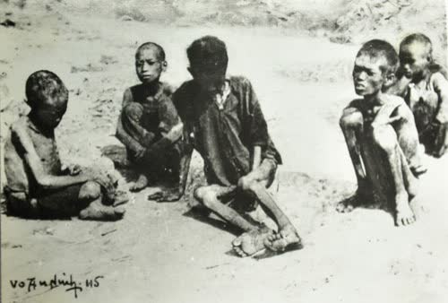
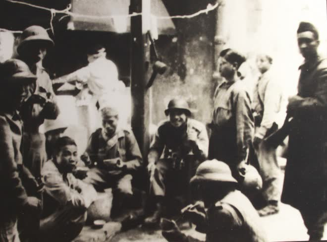

Dĩ bất biến,
ứng vạn biến
1945 – 1954
Chương 2 · Chủ đề 3. Giữ vững chính quyền non trẻ và đường lối kháng chiến chống Pháp: gốc rễ của ngoại giao cây tre Việt Nam.

9/1945
Ngàn cân treo sợi tóc
người chết vì nạn đói năm 1945. Kho bạc gần như trống rỗng.
dân số không biết chữ.
quân Tưởng ở miền Bắc. Đêm 23/9/1945, Pháp nổ súng đánh Sài Gòn.

25/11/1945
Chỉ thị “Kháng chiến kiến quốc”
- Kẻ thù chính: thực dân Pháp.
- Khẩu hiệu: “Dân tộc trên hết, Tổ quốc trên hết”.
- Vừa kháng chiến, vừa xây dựng đất nước.
Kết quả: đầu 1946 đẩy lùi nạn đói · 6/1/1946 bầu Quốc hội lần đầu · cuối 1946 thêm 2,5 triệu người biết chữ.
9/1945 – 2/1946
Hòa với Tưởng để đánh Pháp
Nhượng
- Lương thực cho 20 vạn quân Tưởng
- Cho tiêu tiền quan kim, quốc tệ
- 70 ghế Quốc hội không qua bầu cử
Giữ
“Độc lập về chính trị, nhân nhượng về kinh tế.”
6/3/1946 · Hiệp định Sơ bộ
quân Pháp ra Bắc thay quân Tưởng, rút dần trong 5 năm.
Đổi lại, Pháp công nhận Việt Nam là một quốc gia tự do, có chính phủ, quân đội, tài chính riêng.
Trước đó, 28/2/1946: Hiệp ước Trùng Khánh, Tưởng và Pháp thỏa thuận Tưởng rút về, Pháp ra Bắc.
Sau đó, 9/3/1946: Chỉ thị “Hòa để tiến”.
14/9/1946 · Tạm ước
Nhân nhượng có nguyên tắc
Cành: được nhượng
- Quyền lợi kinh tế, văn hóa
- Thời gian
- Quân số
Gốc: không nhượng
- Độc lập, chủ quyền
Đổi lại: cuối 1946 có khoảng 8 vạn quân chính quy. Nhưng ta càng nhượng, Pháp càng lấn.
19/12/1946 · Lời kêu gọi toàn quốc kháng chiến
Chúng ta thà hy sinh tất cả, chứ nhất định không chịu mất nước, nhất định không chịu làm nô lệ.
Hồ Chí Minh

Kháng chiến chống Pháp
Mỗi người dân là một chiến sĩ.
Quân sự, kinh tế, văn hóa, ngoại giao.
Ta yếu hơn, nên đánh từ từ, lớn dần lên.
Dựa vào sức mình là chính.
Chỉ thị “Toàn dân kháng chiến” 12/12/1946 · Lời kêu gọi 19/12/1946 · “Kháng chiến nhất định thắng lợi”, Trường Chinh, 1947.
Đường lối đúng, chiến trường chứng minh
Việt Bắc Thu Đông: làm phá sản kế hoạch “đánh nhanh, thắng nhanh” của Pháp.
Biên giới Thu Đông: lần đầu ta chủ động mở chiến dịch lớn, giành thế chủ động.
2/1951 · Chiêm Hóa, Tuyên Quang
Đại hội II
- Đảng ra hoạt động công khai: Đảng Lao động Việt Nam.
- Hồ Chí Minh làm Chủ tịch Đảng, Trường Chinh làm Tổng Bí thư.
- Nhiệm vụ: đánh đuổi thực dân Pháp và can thiệp Mỹ, giành độc lập hoàn toàn.
13/3 – 7/5/1954
ngày đêm
Điện Biên Phủ
Tập đoàn cứ điểm mà Pháp gọi là “pháo đài không thể công phá” thất thủ. Tướng De Castries bị bắt sống.
“Lừng lẫy năm châu, chấn động địa cầu.”
21/7/1954 · Hiệp định Giơnevơ
Vừa đánh, vừa đàm
- Công nhận độc lập, chủ quyền, thống nhất, toàn vẹn lãnh thổ của Việt Nam, Lào, Campuchia.
- Tạm chia ở vĩ tuyến 17, hẹn tổng tuyển cử 7/1956.
Thắng ngoài chiến trường thì mới có tiếng nói trên bàn đàm phán.
Ba bài học
- Giữ mục tiêu độc lập thật chắc, còn cách làm thì linh hoạt.
- Tận dụng mâu thuẫn của đối phương: hòa Tưởng để đánh Pháp.
- Dựa vào dân: từ hũ gạo cứu đói đến dân công lên Điện Biên.
12/2021 · Hội nghị Đối ngoại toàn quốc
Ngoại giao cây tre
“Gốc vững, thân chắc, cành uyển chuyển.”
Tổng Bí thư Nguyễn Phú Trọng. Gốc là độc lập, chủ quyền: không lay. Cành là cách ứng xử: mềm, nghiêng theo gió nhưng không gãy. Y như năm 1946.
Hôm nay
Bốn không
- Không liên minh quân sự
- Không theo nước này chống nước kia
- Không cho đặt căn cứ quân sự nước ngoài
- Không dùng hay dọa dùng vũ lực
Biển Đông
- Chủ quyền giữ tới cùng
- Giải quyết bằng hòa bình, theo Công ước Luật Biển 1982 (UNCLOS)
Nghị quyết 59-NQ/TW (2025): hội nhập sâu hơn, lợi ích quốc gia trên hết.
Với sinh viên
Bài nhóm
Gốc: không gian lận.
Cành: góp ý nhẹ nhàng, cùng chia lại việc thay vì cãi nhau.
Trên mạng
Gốc: chủ quyền biển đảo.
Cành: tranh luận đàng hoàng, có nguồn rõ ràng, không chửi bới.
Cho 15.000 quân Pháp vào miền Bắc: khôn hay liều?
Nhường tới đâu thì còn là linh hoạt, tới đâu thì thành mất nguyên tắc?
Liều, nhưng có tính toán
Liều
Cho quân Pháp vào tận miền Bắc.
Khôn
- Đẩy 20 vạn quân Tưởng và tay sai về nước
- Có thêm thời gian xây dựng lực lượng
- Pháp công nhận Việt Nam là quốc gia tự do
Ranh giới: nhượng cách làm, thời gian, quyền lợi nhỏ thì được. Độc lập, chủ quyền thì không. Bằng chứng: 12/1946 Pháp đòi tới độc lập, ta kháng chiến ngay.
Độc lập thì giữ nguyên.
Cách làm thì tùy lúc mà đổi.
Năm 1946 là “hòa để tiến”. Hôm nay là “ngoại giao cây tre”.
Cảm ơn thầy/cô và các bạn đã lắng nghe
Công cụ: Claude (Anthropic) · skill Impeccable
Báo cáo AI: prompt tạo website
Đóng vai nhà thiết kế web chuyên nghiệp. Làm một website trình chiếu thay cho slide, cho bài thuyết trình 15 phút của 5 người: Chương 2 · Chủ đề 3 môn VNR202, “Dĩ bất biến, ứng vạn biến” (1945–1954 và ngoại giao cây tre). Ý tưởng chính: một cây tre mọc thêm một đốt sau mỗi slide; gốc đứng yên là độc lập, chủ quyền, cành nghiêng theo gió là cách làm linh hoạt. Mỗi người một chặng, tên ghi trên thân tre. Chữ to, đọc được từ cuối lớp; chuyển slide bằng phím ← →, có toàn màn hình. Dùng ảnh tư liệu thật từ Wikimedia Commons, không dùng ảnh AI, ghi nguồn dưới ảnh. Nội dung lấy theo kịch bản và slide bài giảng đính kèm.
Nhóm duyệt từng bản và kiểm tra lại mốc thời gian theo slide bài giảng.